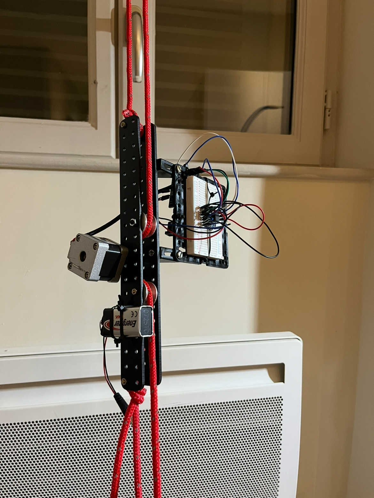
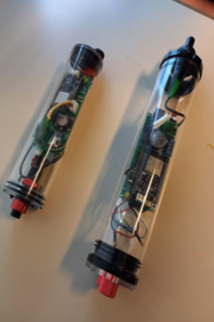
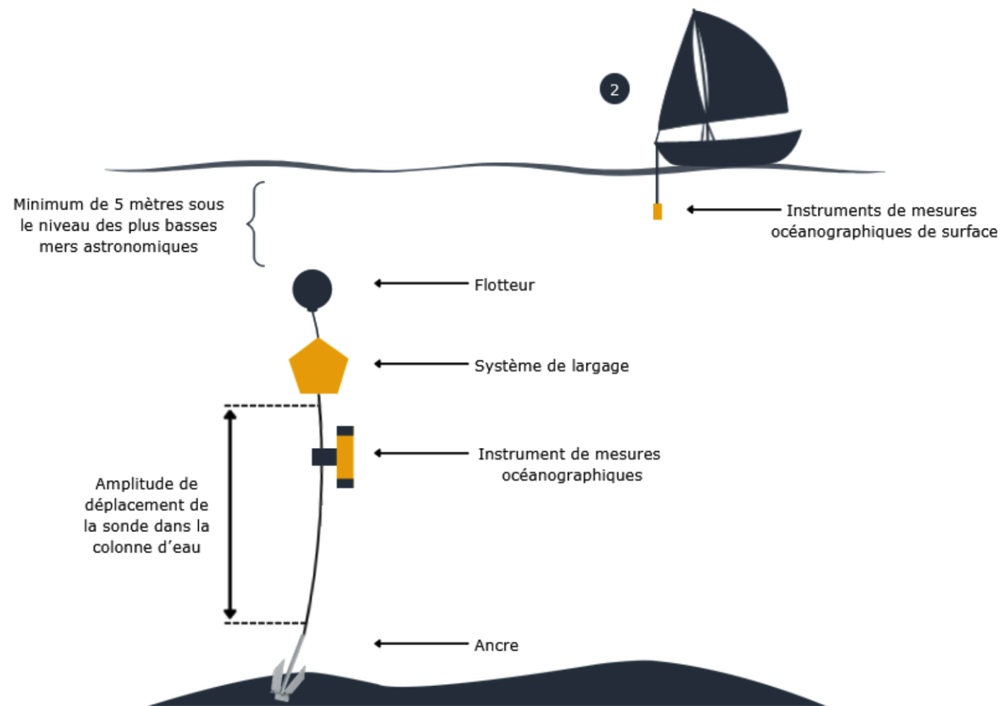
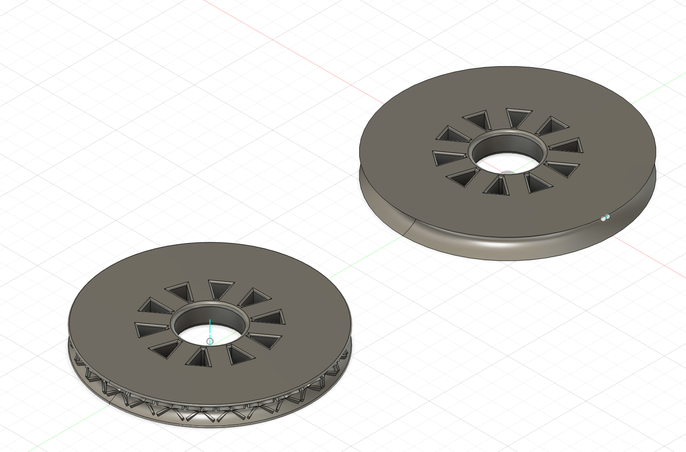
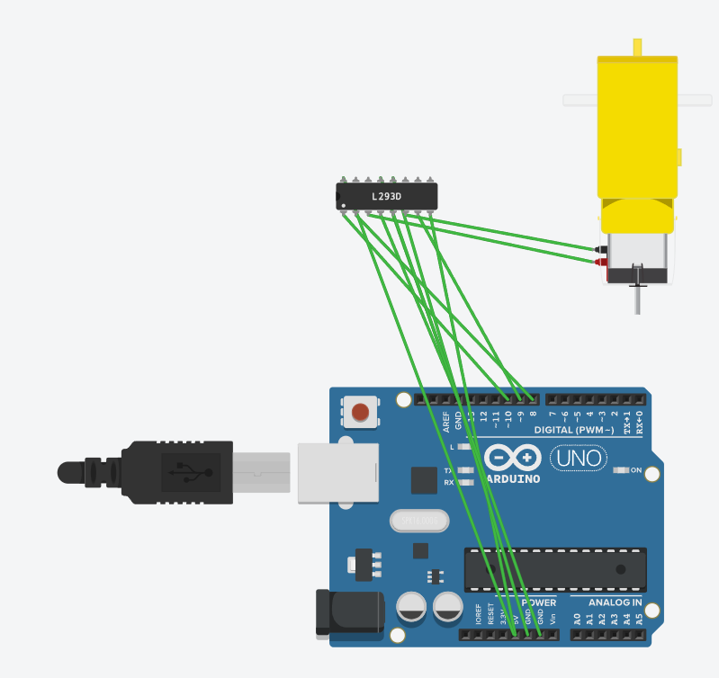
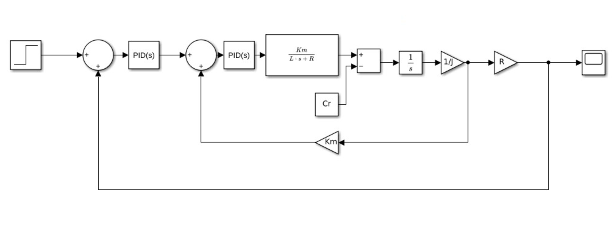

03 — Innovation
Ce qui rend le système unique



Un capteur océanographique mobile, open-source et low-cost, capable de parcourir toute la colonne d'eau le long d'un mouillage littoral.
Les zones côtières jouent un rôle capital dans la régulation de notre climat. Elles concentrent les échanges entre eaux douces et marines, influençant directement la salinité des océans et les courants qui structurent notre système climatique mondial.
Ces écosystèmes d'une richesse biologique exceptionnelle sont aujourd'hui soumis à une pression croissante : activités anthropiques, surexploitation des ressources, changement climatique. Comprendre leur évolution requiert un réseau d'observation continu, précis et déployable à grande échelle.
C'est dans cette optique qu'Astrolabe Expeditions a conçu LittObs : un programme de recherche participative permettant à des citoyens, marins et scientifiques de co-construire des instruments océanographiques ouverts, abordables et réplicables partout dans le monde.
Étude de l'interface entre eaux douces et marines, déterminante pour les courants océaniques.
Écosystèmes parmi les plus riches de la planète, au cœur des enjeux de conservation marine.
Des outils open-source co-développés avec la société civile, les FabLabs et les instituts scientifiques.
Prototypé en rade de Brest, LittObs se déploie sur toutes les façades littorales d'intérêt scientifique.
Le système initial reposait sur un ou plusieurs capteurs immobiles, fixés à différentes profondeurs sur le filin de mouillage. Pour obtenir un profil complet de la colonne d'eau, il fallait multiplier les instruments — jusqu'à 30 sondes pour un mouillage de 300 mètres avec une mesure tous les 10 mètres.
Le nouveau système intègre un mécanisme motorisé permettant à une unique sonde de se déplacer de façon autonome le long du filin de mouillage. Un seul instrument suffit désormais pour couvrir l'intégralité de la colonne d'eau, en effectuant des allers-retours à vitesse contrôlée.

Vue d'ensemble du mouillage LittObsLe mouillage ne dépasse pas la surface pour éviter les courants et la gêne des navires. La bouée flotte en subsurface à −5 m minimum.
Dispositif de largage temporel (ou acoustique) qui libère la bouée à une date et heure programmée, permettant la récupération depuis la surface.
Le capteur se déplace le long du filin grâce à un mécanisme motorisé embarqué, réalisant des profils de mesure sur toute la colonne d'eau.
Une ancre de 12 kg et un lest de 10 kg maintiennent le mouillage. Le système est utilisable entre 0 et 30 m de profondeur.



Modélisation 3D des composants mécaniquesRésistance à la corrosion saline, aux UV et à la pression. Choix rigoureux des matériaux et traitements de surface adaptés.
Minimisation de l'encrassement biologique pour maintenir les performances de mesure sur toute la durée du déploiement.
Conception d'un système de motorisation fiable, étanche et autonome capable de fonctionner 6 mois sans intervention.
Optimisation de la consommation pour atteindre 6 mois d'immersion continue sur batteries 18650 standard.

Architecture de câblage et contrôle moteurLe système repose sur un microcontrôleur ESP32 programmé via l'environnement Arduino. Ce choix permet de bénéficier d'une faible consommation électrique tout en conservant une puissance de calcul suffisante pour la gestion des capteurs et de la motorisation.
Le firmware gère l'acquisition des données CTD, le cadencement des profils et le pilotage du pont en H (L293D) pour le déplacement vertical de la sonde.
Pour garantir une vitesse de descente et de remontée constante malgré les courants et les variations de densité, un asservissement de type PID est implémenté. La modélisation sous Simulink permet de simuler le comportement dynamique du système dans la colonne d'eau.
Cette approche assure une précision optimale des profils de mesure et protège le mécanisme motorisé contre les surcharges.

Boucle d'asservissement PID du système LittObsLittObs est le fruit d'une collaboration entre acteurs scientifiques, associatifs et citoyens. Sa force réside dans la diversité des parties prenantes impliquées dans chaque étape du programme.
Vous êtes chercheur, marin, maker, ou simplement passionné par l'océan ? LittObs est un programme ouvert à toutes les contributions. Contactez Astrolabe Expeditions pour participer.
Prendre contact